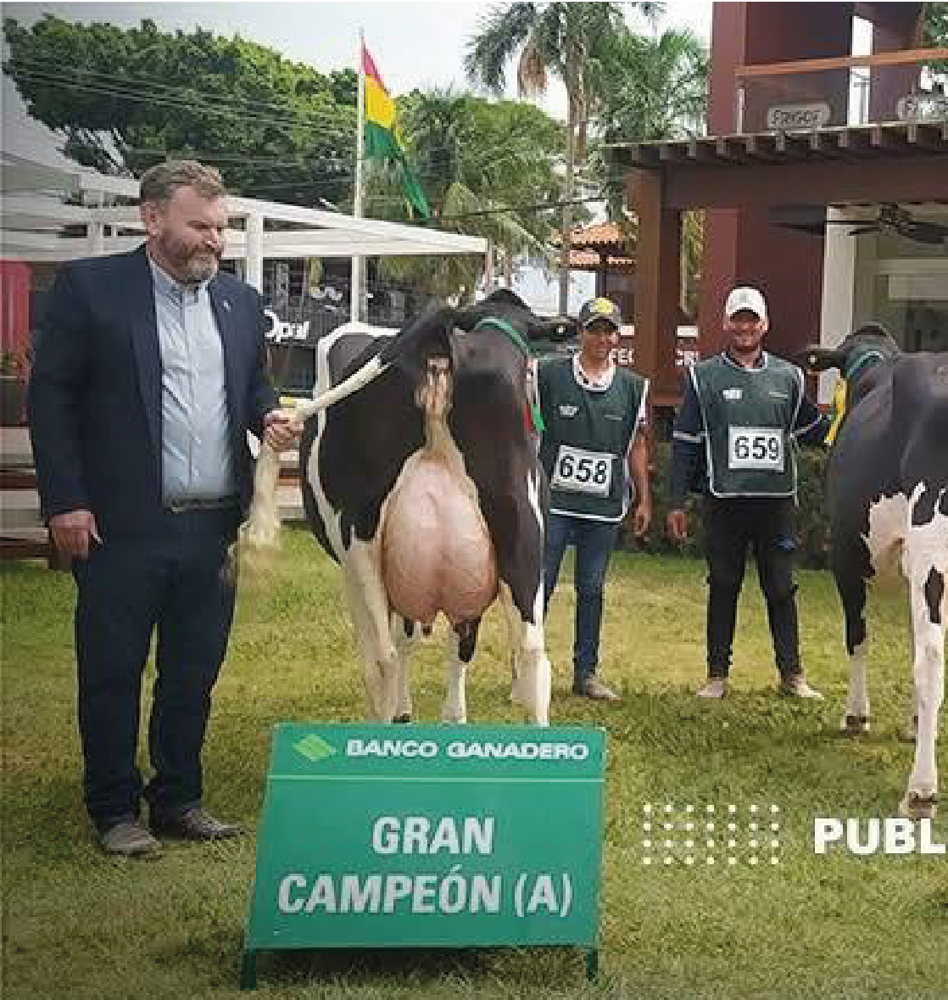
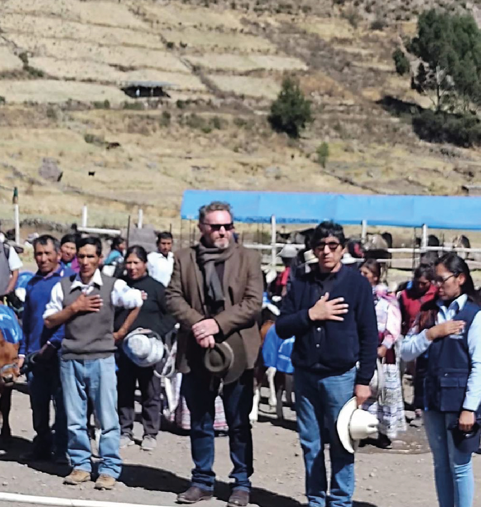
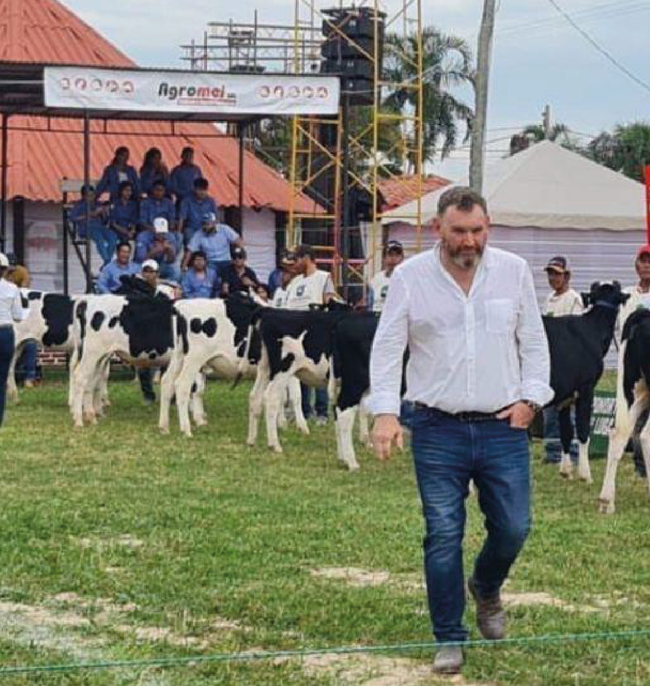
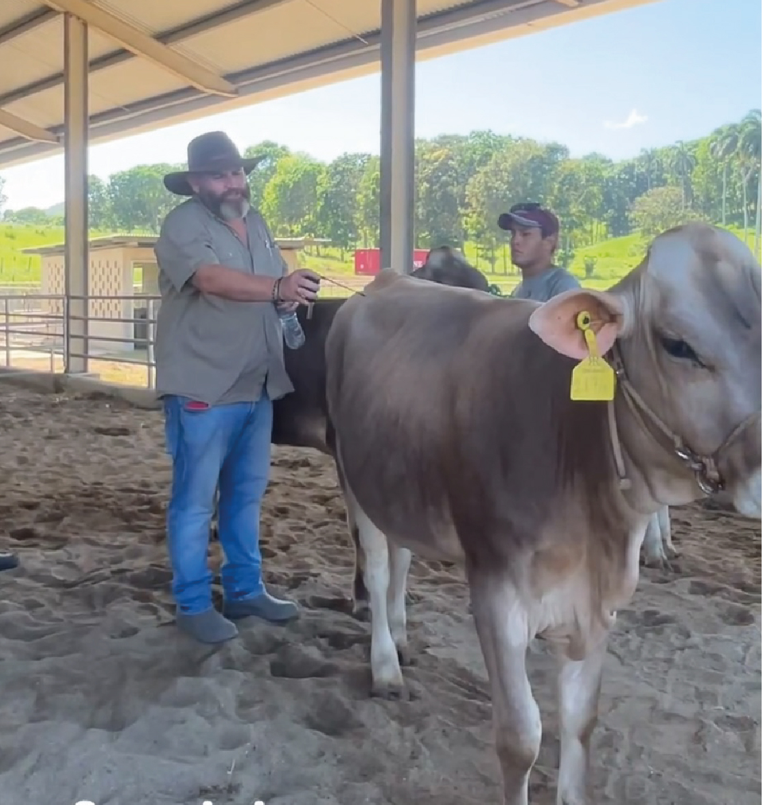
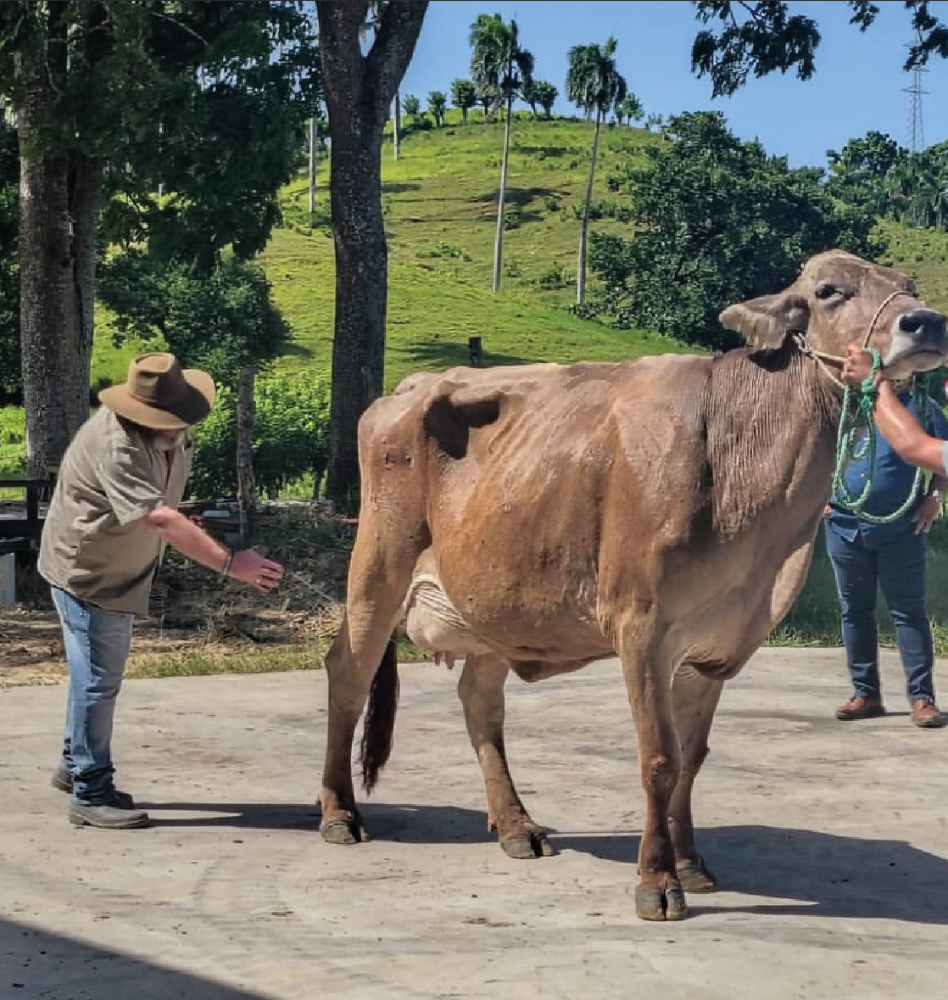
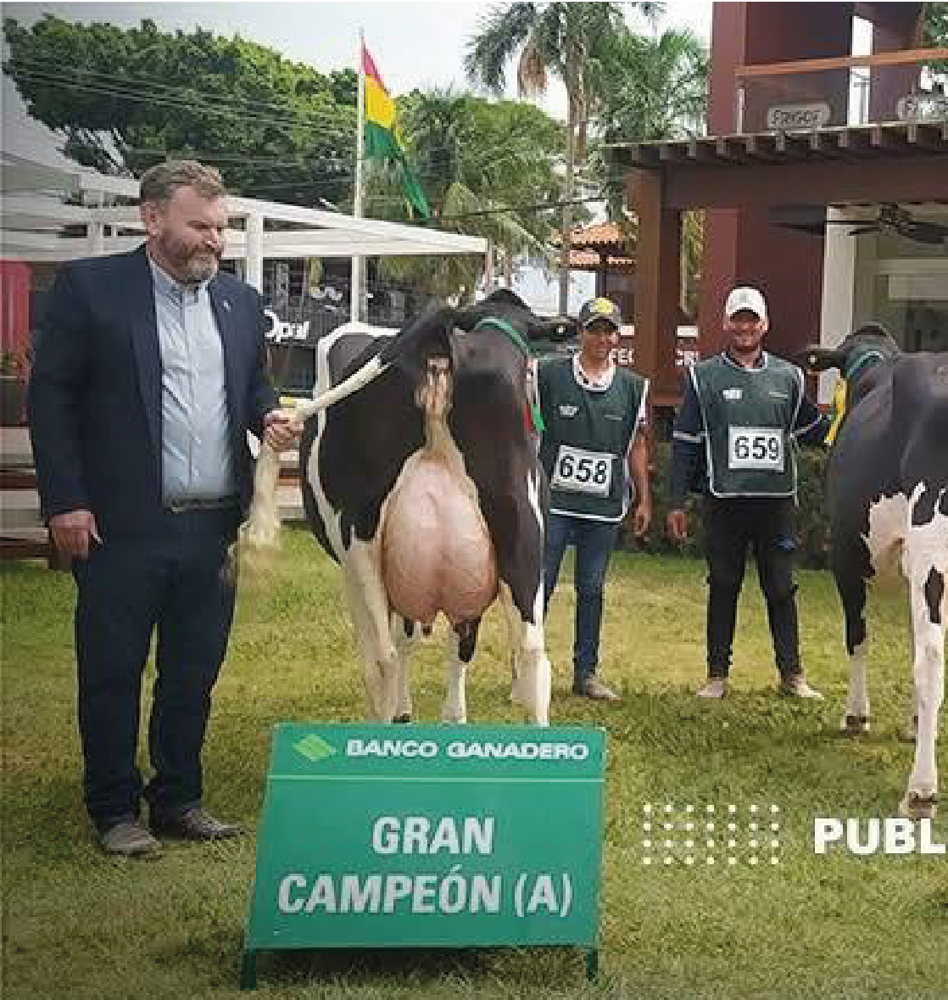
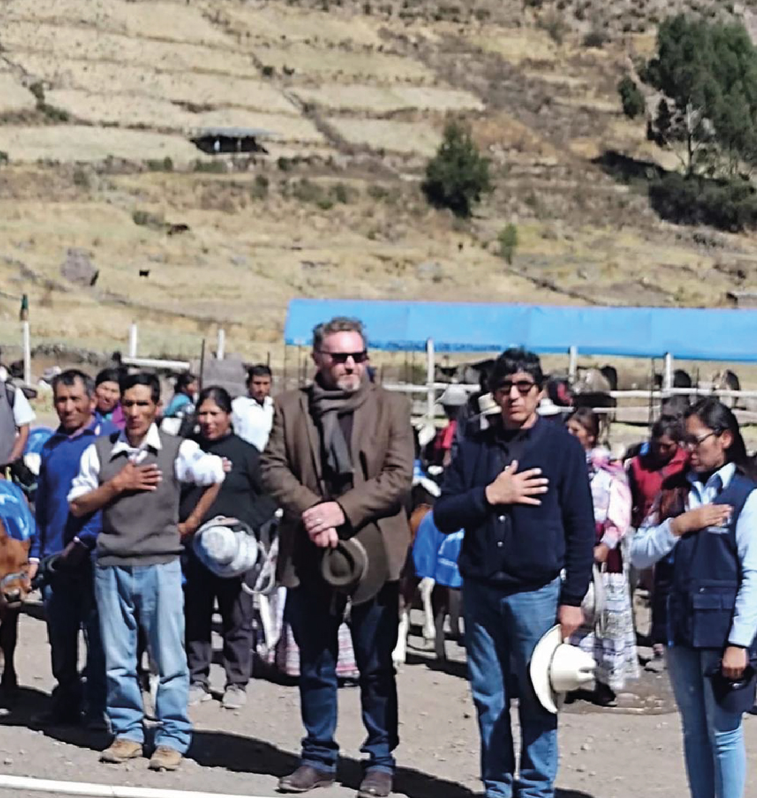
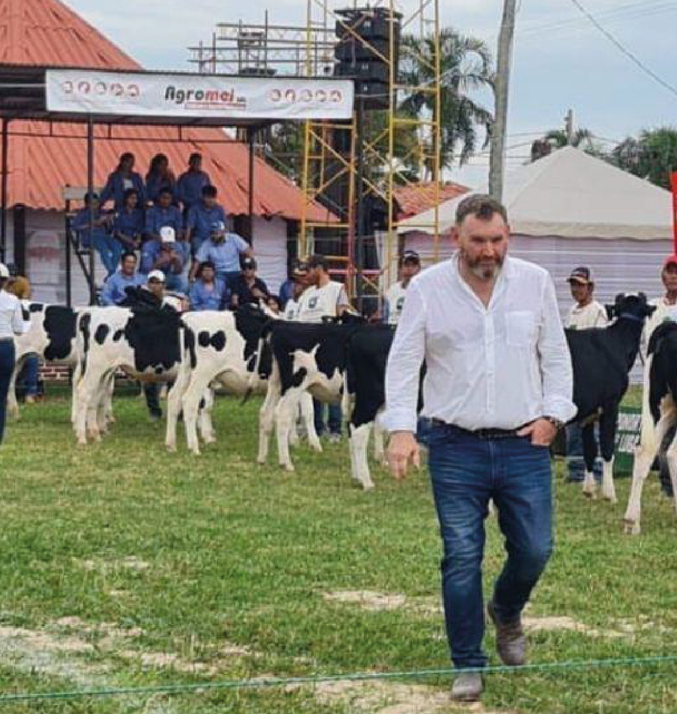
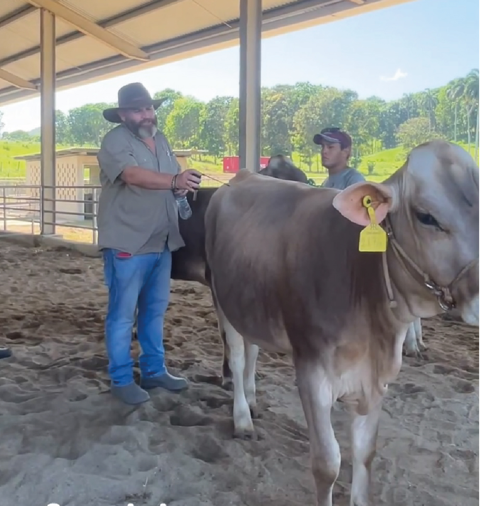
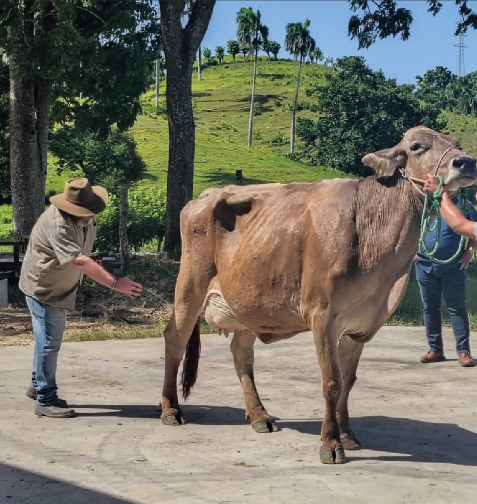

Sobre mí
Crecí en el campo y desde joven me involucré en el tambo que teniamos en La Liebre, ubicado en Las Heras, Buenos Aires. La historia familiar empezó en 1938, cuando mi abuelo adquirió el campo con siete tambos que ordeñaban vacas Shorton a mano. Crecí aprendiendo en el campo, viendo cómo la producción evolucionaba y se modernizaba. Con el tiempo, mejoramos la genética del ganado incorporando vacas Holando, que hoy producen entre 25 y 30 litros de leche por día. Desde que era adolescente me formé trabajando y aprendiendo sobre el manejo del tambo y la ganadería, con pasión y dedicación. Nuestro sistema de producción es pastoril, con suplementación de silo de maíz y paja de cebada, lo que nos permite mantener una producción estable durante todo el año. Además, criamos y recriamos las hembras en el mismo establecimiento, asegurando la calidad genética y la sustentabilidad del tambo.
Servicios
Juez de feria
Soy juez de feria de vacas lecheras con 20 años de experiencia. Evalúo la conformación y salud de los animales, promoviendo calidad. He visitado Perú, Bolivia y Venezuela para certificar ganado.d
Clases de juzgamiento
Doy clases de juzgamiento donde enseño a evaluar vacas lecheras, enfocándome en su conformación, ubres, patas y salud. Combino teoría y práctica para ayudar a mejorar la calidad del ganado.
Manejo de Tambo
Soy tambero desde los 21 años, en lacterias La Liebre. Desde los 15 años trabajo y me formo en el campo, adquiriendo un sólido conocimiento sobre las razas lecheras y su manejo para optimizar la producción.
Experiencia
 









Contacto
¿Querés saber más o trabajar juntos? Escribime o visitá mis perfiles
Facebook Instagram